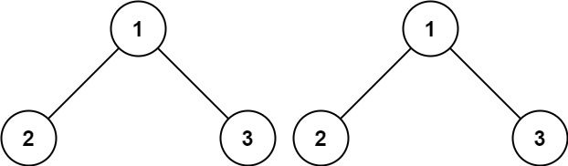
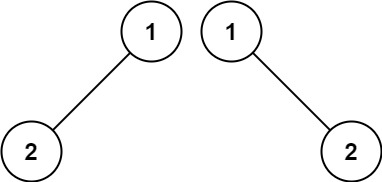
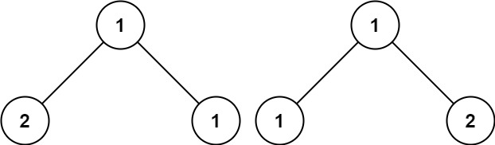

100. 相同的树
双递归同构比较：都空则相同、一边空则不同、值不同则不同，否则左右子树分别递归比较。
思路
- 两个指针同时在两棵树里往下走：
p == null || q == null时返回p == q（都空 true、一边空 false）。 - 值不同直接 false；否则
isSameTree(p.left, q.left) && isSameTree(p.right, q.right)。 &&短路：左边不同就不比右边。树的结构（空位）和值都要一样才算相同。
图解
最优解
1class Solution {2 public boolean isSameTree(TreeNode p, TreeNode q) {3 // 都空：相同；只有一边空：不同4 if (p == null || q == null) return p == q;5 // 值相同，且左右子树分别相同6 return p.val == q.val7 && isSameTree(p.left, q.left)8 && isSameTree(p.right, q.right);9 }10}题目
给你两棵二叉树的根节点 p 和 q ，编写一个函数来检验这两棵树是否相同。
如果两个树在结构上相同，并且节点具有相同的值，则认为它们是相同的。
示例 1：

输入：p = [1,2,3], q = [1,2,3] 输出：true
示例 2：

输入：p = [1,2], q = [1,null,2] 输出：false
示例 3：

输入：p = [1,2,1], q = [1,1,2] 输出：false
提示：
- 两棵树上的节点数目都在范围
[0, 100]内 -104 <= Node.val <= 104
题面取自力扣当前版本。
数据快照 2026-11-04。题面版权归力扣所有，本站点仅供本人学习使用，请勿对外发布。